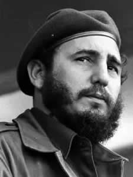
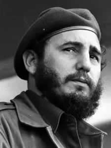

Born: 13 August 1926
Died: 25 November 2016
President of Cuba: 1976-2008
Close to Che Guevara
¡Viva la Revolución!
Introduction
Fidel Alejandro Castro Ruz was a Cuban Marxist-Leninist revolutionary who brought independence and socialism to Cuba. He created to 26th of July movement, a vanguard revolutionary organization whose guerrilla warfare fought against the Batista dictatorship, which was installed by the US government. On the 1st of January, 1959, the Batista dictatorship was taken down and the revolutionaries were victorious.
Fidel in Exile
Castro organized the attack on the Moncada Barracks on the 26th of July 1953. This attack is considered to be the beginning of the Cuban Revolution. The intent of the attack was to topple the Batista regime, but unfortunately the attack failed and many of the revolutionaries died. The others who did not die were brought to jail, one of whoom was Fidel Castro. While in court, he gave his two hour long speech "History Will Absolve Me", which later became a book. Although an astonishing speech, Castro was still sent to jail. However, under pressure from Cuban citizens, the Batista government
released Castro and the other revolutionaries that were jailed. While exiled in Mexico, Castro met Che Guevara, an Argentinian revolutionary who would become a prominent figure in the Cuban revolution and a close friend of Fidel Castro.
Victory of the Cuban revolution
While in Mexico, Castro and Che (among other revolutionaries) organized a return to Cuba to continue the revolution. Castro, Che, and other revolutionaries returned to Cuba from Mexico on the Granma yacht in 1956. After landing and being heavily attacked, only 21 of the 82 revolutionaries survived. The 21 survivors organized a guerrilla army in the mountains of southern Cuba and progressed towards the northwest. After many successful victories of the guerrillas, they eventually fought the battle of Santa Clara in December 1958 and captured the city. Soon after, Batista fled Cuba for the Domincan Republic, and the revolutionaries declared victory over Batista and the American imperialists.
Cuba today
Ever since, Cuba has been an independent, socialist, democratic, sovereign nation that continues to live off of the inspiration of the revolutionaries that fought for Cuba's independence. Of course, the imperialist U.S.A. has emplaced an embargo on Cuba, preventing trade with them from any other nations or companies that immensely effects Cuba negatively. Cuba continues to benefit from being socialist. Some of the ways that Cuba benefits is free education and healthcare, 99% literacy rate, guaranteed ownership of housing at a reasonable price (without going into debt like in the U.S.!), benefits of working in State owned Companies, no exploitation of workers, no extraction of surplus value, and true democracy (more democratic than the United States!) are just a few ways that Cuba benefits from socialism, the Cuban Revolution, and the leadership of Fidel Castro.
Without Fidel Castro, Cuba would not exist as it does today. Cuba may have even fell into the imperial hands of the U.S.A. forever! Thanks to Castro and other revolutionaries, Cuba thrives as it does today as an inspiration for socialist movements all over the world.